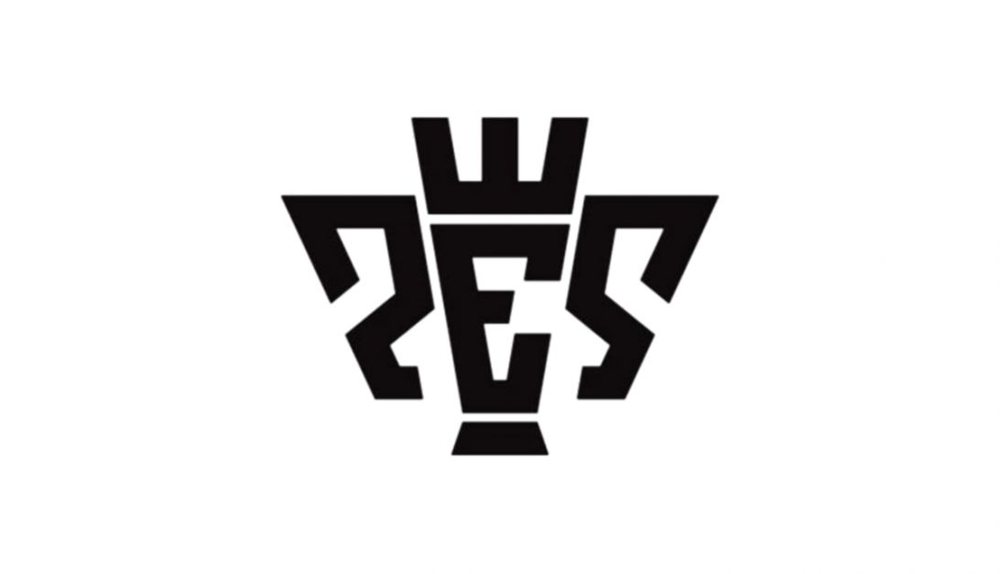

Sobre Mim
Básico
Meu nome é Renatto de Souza Padilha Feitosa, eu nasci em Recife-PE no dia 19 de fevereiro de 2001, ou seja, tenho 18 anos. Atualmente curso Ciencia da Computação na UFPE (Univesidade Federal de Pernambuco).
Hobbies
Como qualquer pessoa, eu tenho meus Hobbies (mesmo que
a federal roube a maioria do meu tempo), para não me
extender muito, vou apenas colocar 3:
Jogos: Sempre tive uma paixão por jogos, principalmente
nos últimos 4 anos e esse é o hobby que eu gasto mais
tempo. Se quiser, jogar alguma coisa comigo, é só falar comigo
no Instagram ou pessoalmente.
Abaixo alguns jogos que eu gosto e significam algo para mim.
OBS: O jogo que eu mais gosto e jogo atualmente é LOL (Sou Jungler).



Link para o melhor jogo
Assistir: Eu gosto bastante de assistir diversos tipos
de filmes, séries e animações como passatempo e também
fazer avaliações e comparações entre elas. Além disso,
curto bastante discutir com pessoas teorias e detalhes
sobre isso.
Ensinar: É um hobby um pouco diferente, mas eu gosto
bastante de ensinar pessoas e ajudá-las a alcançar
algo que almejam.
Objetivos e Motivações no Curso
Atualmente os objetivos são obscuros, ainda tenho dúvidas
sobre que área de atuação irei seguir (mesmo que com algumas
que chamam a minha atenção), além de desconhecer outras.
Assim, minha maior motivação é aproveitar ao máximo a
estrutura do CIn e melhorar como profissional, além de
conhecer diversas pessoas e áreas novas.